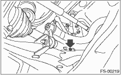
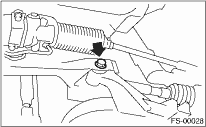

1. Disconnect the ground cable from the battery.
2. Lift-up the vehicle, and remove the front wheels.
3. Disconnect the connector of the front vehicle height sensor. (HID model, right side only)

4. Remove the nuts that hold the front transverse link and the front vehicle height sensor bracket. (HID model, right side only)

5. Remove bolt (A) and clip (B) fixing the front crossmember and the front vehicle height sensor bracket, then remove the front vehicle height sensor assembly. (HID model, right side only)

6. Remove the sub frame. 
7. Remove the stabilizer link from the transverse link.
8. Remove the bolt securing the ball joint of the transverse link to housing.

9. Remove the nut securing the transverse link to the crossmember. (Do not remove the bolt.)
10. Remove the two bolts securing the bushing bracket of the transverse link to the rear bushing location on the body.
11. Extract the ball joint from housing.
12. Remove the bolt securing the transverse link to crossmember and extract the transverse link from the crossmember.
